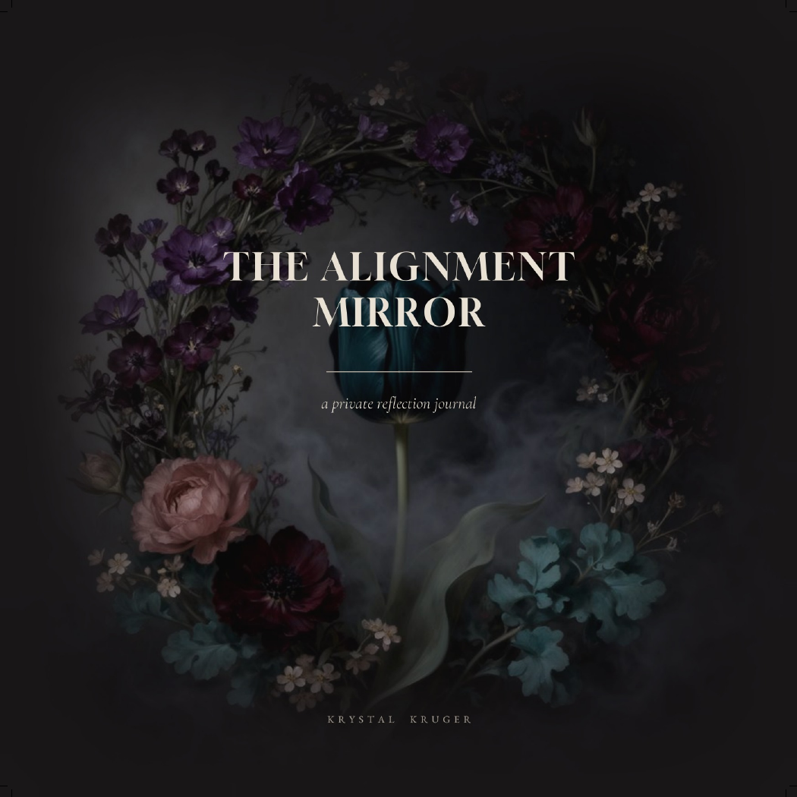
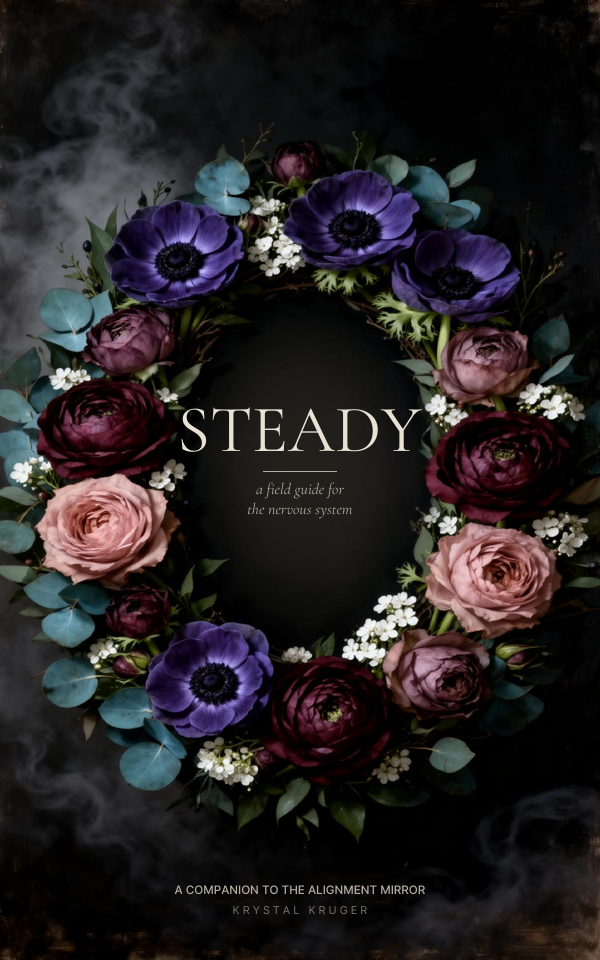
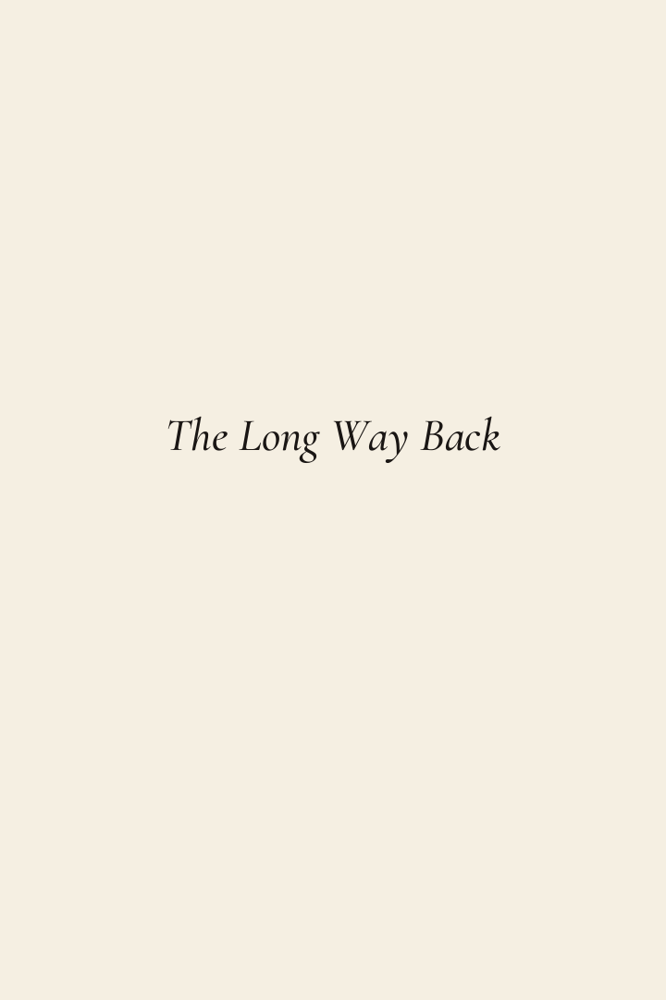
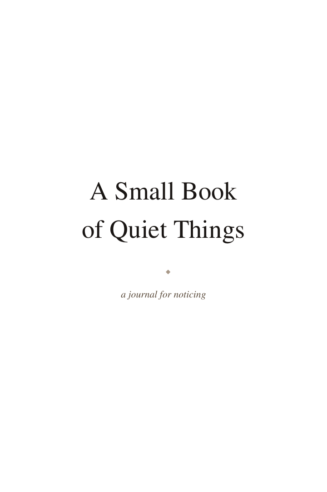

Krystal Alvarez · Brand strategy · Creative systems · AI direction
The strongest brands aren't invented. They're revealed.
The Krystal Method uncovers what already makes a person, creator, or business compelling, then builds the systems that express that truth consistently.
What this is
A strategic brand methodology, not a design factory.
Every brand leaves clues: audience reactions, instinct, history, language, work, and personality. The work is collecting those clues until the common thread becomes obvious.
The result is not a prettier mask. It is a usable system: voice, positioning, visual direction, content, pages, workflows, and rules that keep the brand from drifting.
Boundaries matter
What The Krystal Method is not
Selected proof
Built systems, not isolated deliverables.
These projects show the same process applied across different worlds: reveal the truth, define the rules, build the assets, and keep the system coherent.
01 · Brand ecosystem
Mr. Satan
A South Florida Industrial / EBM / Fetish DJ brand developed into a booking-ready ecosystem with identity direction, EPK structure, landing page, social proof, and event-facing assets.

02 · Publishing ecosystem
The Inner Hour
An AI-assisted survivor-support publishing world with reflective books, journals, field guides, editorial voice, interior design, and print/digital production logic.




03 · AI support tools
Creator systems
Custom AI-assisted workflows and app concepts designed around idea capture, research, booking prep, reminders, and creative momentum.
04 · Story worlds
Characters & campaigns
Character-driven creative systems built through art direction, recurring motifs, tone rules, and emotional continuity.
What I build
Useful systems for messy ideas with a real pulse.
Brand strategy
Voice, positioning, rules, audience fit, and the core truth underneath the noise.
Creative direction
Visual language, content direction, asset choices, and the rules for what belongs.
Landing pages
Clear pages that explain the offer, hold the brand, and give people somewhere to go.
EPKs & media kits
Press-ready identity packages for DJs, artists, speakers, creators, and performers.
Publishing systems
Book worlds, journals, editorial systems, KDP prep, and digital product ecosystems.
AI workflows
Practical AI systems for research, drafting, organization, content, and operations.
Flagship offer
The Krystal Method Intensive
$497 introductory
A focused brand clarity reset for creators, small businesses, and creative people whose work is real but hard to explain cleanly.
- Brand clarity session
- Voice and positioning guide
- Bio rewrite
- Landing page copy direction
- Social profile optimization
- 30 content ideas
- AI workflow recommendations
Add-on
Landing page design
+$250
The page itself, not just the words.Add-on
EPK / media kit
+$300
For artists, DJs, speakers, and creators who need a press-ready identity package.The process
Discovery before design. Always.
Discover
Collect reality: audience reactions, history, assets, goals, personality, and instinct.
Decode
Find the pattern. What repeats? What resonates? What feels inevitable?
Define
Name the world: voice, positioning, visual direction, rules, and boundaries.
Build
Create the ecosystem: content, pages, EPKs, books, templates, workflows, and SOPs.
Evolve
Improve with evidence without drifting away from the core truth.
About Krystal
I do not think in isolated deliverables. I think in ecosystems.
My background spans hospitality, restaurant management, operations, client service, social media, and brand voice development. That combination taught me to recognize patterns under pressure.
I use AI heavily, but not casually. Ideas, taste, direction, editing, systems, and final decisions stay human.
Contact
Bring me the messy idea.
Send the project, the problem, the half-formed brand, or the thing that almost makes sense. I will help uncover what is already there and build the system around it.